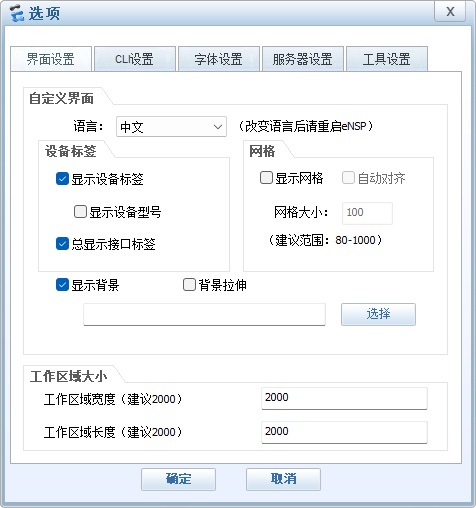
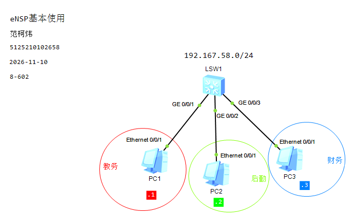
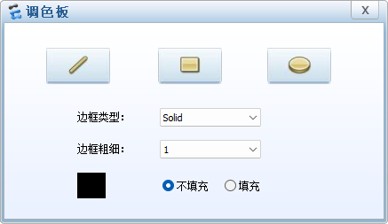
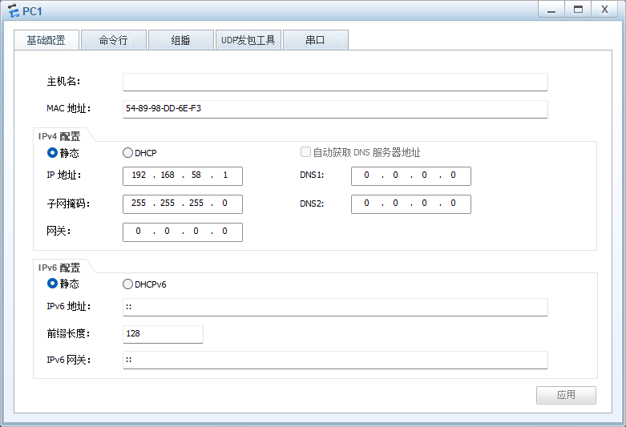
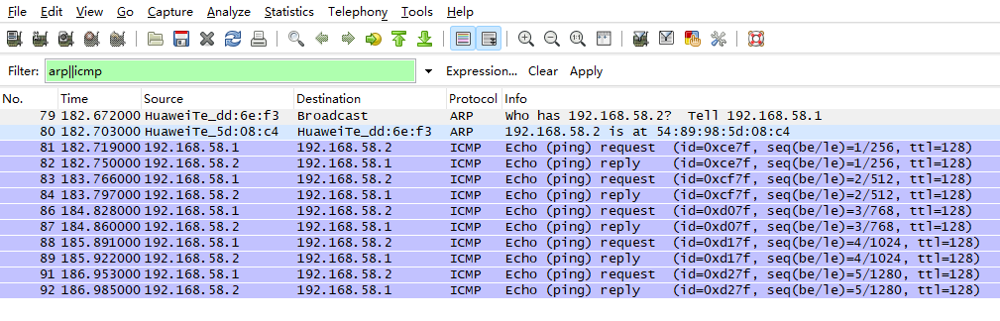
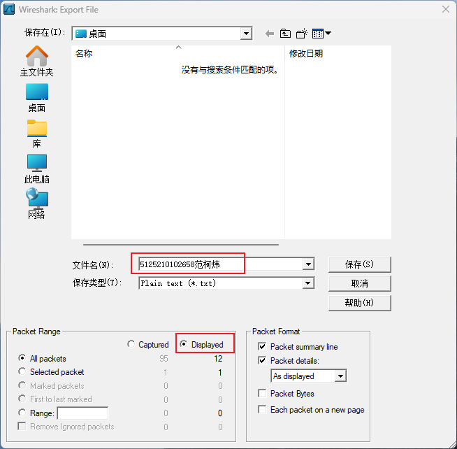

设备标签
接口标签
设置 CLI 字体

路由器 Router
交换机 Switch
终端 Terminal
连接线 Connection
交换机 S5700 1台
终端 PC 3台

字体大小
字体颜色
背景颜色
形状：椭圆
边框类型：实线 solid
边框粗细：1
颜色：参考网络拓扑
不填充

PC1：192.168.58.1 255.255.255.0
PC2：192.168.58.2 255.255.255.0
PC3：192.168.58.3 255.255.255.0

<Huawei>display mac-address <Huawei>
PC>arp -a Internet Address Physical Address Type
PC>ping 192.168.58.2


PC>arp -a Internet Address Physical Address Type 192.168.58.2 54-89-98-5D-08-C4 dynamic
<Huawei>dis mac-address
MAC address table of slot 0:
-------------------------------------------------------------------------------
MAC Address VLAN/ PEVLAN CEVLAN Port Type LSP/LSR-ID
VSI/SI MAC-Tunnel
-------------------------------------------------------------------------------
5489-985d-08c4 1 - - GE0/0/2 dynamic 0/-
5489-98dd-6ef3 1 - - GE0/0/1 dynamic 0/-
-------------------------------------------------------------------------------
Total matching items on slot 0 displayed = 2
使用 Wireshark 或 PING，测试其它设备的连通性
查看对应的 ARP 缓存
查看交换机的 MAC 表变化
等待一段时间（180s），再次检查各主机缓存表
等待一段时间（300s），再次检查各交换机 MAC 地址表
使用其它过滤方法过滤和保存分组